Управление программными проектами
02 / 18 · 90 минут
Проект, задача
и результат в Битрикс24
Продолжаем запуск магазина рюкзаков. Создадим пространство проекта, опишем правила резервирования товара и сохраним результат в задаче.
Цель и границы первого выпуска.
Условие, исполнитель и срок.
Правила и два проверяемых примера.
01Битрикс24: знакомство и регистрация
В первой лекции два покупателя претендовали на последний рюкзак. Теперь оформим работу аналитика: зафиксируем правила резервирования товара.
Битрикс24 — сервис для совместной работы. В нём команда создаёт проекты, назначает задачи, задаёт сроки и обсуждает результаты. У проекта есть общее пространство, а у каждой задачи — карточка с условиями и перепиской.
Перед началом зарегистрируйтесь на сайте Битрикс24 и создайте своё рабочее пространство — портал. В нём будут храниться ваши проекты и задачи.
Практику выполняйте в своём портале. Задачу назначьте себе: вы пройдёте все шаги от её постановки до завершения. На скриншотах показана работа после регистрации и входа в сервис.
02Создание проекта
У магазина есть общий результат: покупатель оформляет заказ, а склад получает оплаченный товар к отгрузке. Запишем эту цель и состав первого выпуска в проекте.
- Откройте «Проекты»
В левом меню найдите раздел «Проекты» и откройте его.
Откройте «Проекты» Красная рамка показывает пункт навигации. Нажмите изображение, чтобы открыть исходный размер. - Начните создание
На странице проектов нажмите «Создать».
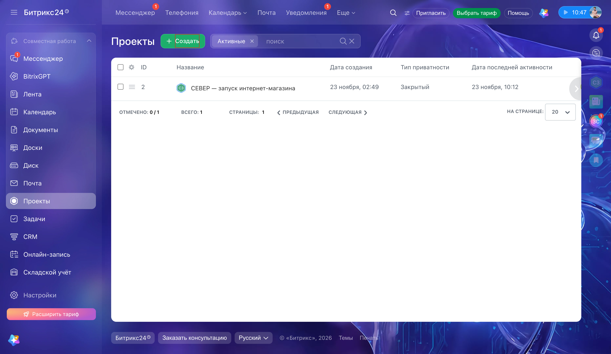
Начните создание Выделена кнопка над списком проектов. Нажмите изображение, чтобы открыть исходный размер. - Введите название
Укажите: СЕВЕР — запуск интернет-магазина.
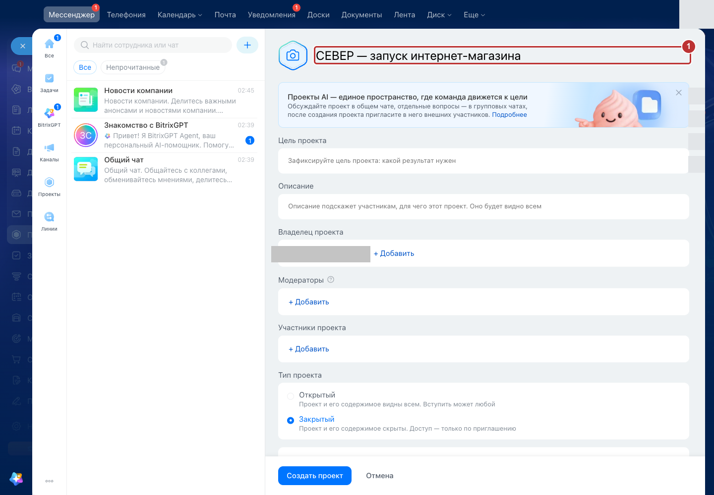
Введите название Поле названия находится в верхней части формы. Надпись «Проекты AI» относится к текущему интерфейсу сервиса. Нажмите изображение, чтобы открыть исходный размер. - Запишите цель
В поле «Цель проекта» введите: Покупатель оформляет заказ на сайте; товар резервируется, оплата подтверждается, заказ передаётся на склад.

Запишите цель Цель описывает ожидаемый результат для бизнеса. Нажмите изображение, чтобы открыть исходный размер. - Определите границы выпуска
В описание внесите: Первый выпуск: каталог, корзина, заказ, резервирование, подтверждение оплаты и передача на склад. Бонусы и рекомендации отложены.
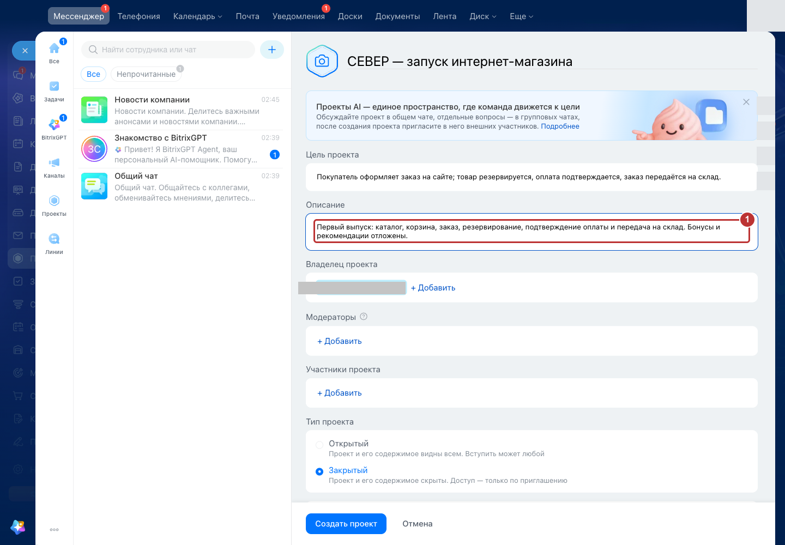
Определите границы выпуска Описание отделяет согласованный объём от будущих пожеланий. Нажмите изображение, чтобы открыть исходный размер. - Проверьте доступ
Выберите тип «Закрытый», если он ещё не выбран. Поля добавления участников оставьте без изменений.
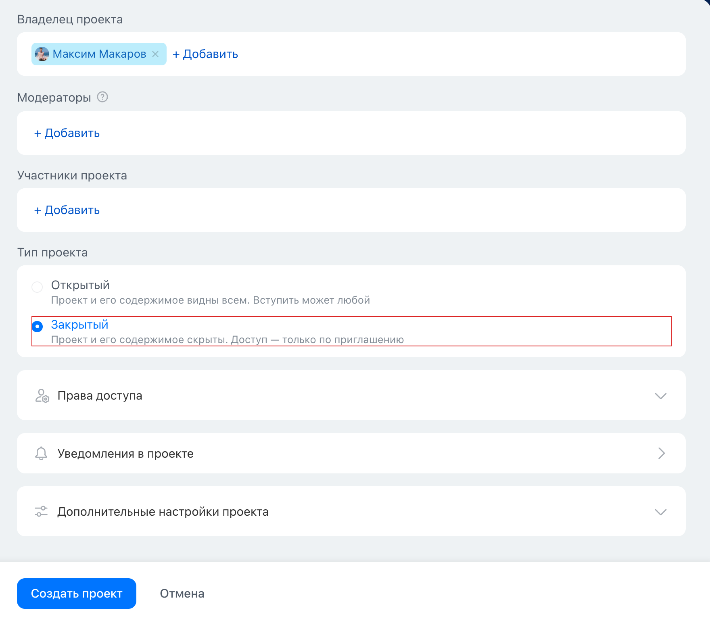
Проверьте доступ В форме указано: доступ к содержимому закрытого проекта предоставляется по приглашению. Нажмите изображение, чтобы открыть исходный размер. - Создайте проект
Нажмите «Создать проект». В этом маршруте новые приглашения не отправляются.

Создайте проект Кнопка находится внизу формы. Нажмите изображение, чтобы открыть исходный размер. - Проверьте созданный проект
Найдите название, цель и описание в сообщении о создании. Проверьте, что сохранился введённый текст.
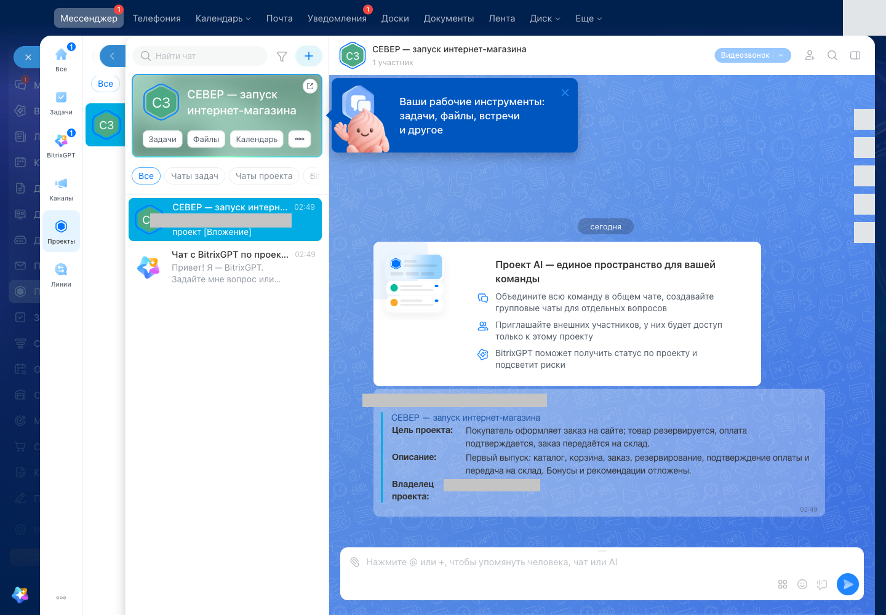
Проверьте созданный проект Открыто пространство проекта. Здесь доступны задачи, файлы, календарь и обсуждение. Нажмите изображение, чтобы открыть исходный размер.
Цель и границы проекта сохранены. Для выполнения отдельной части работы добавим задачу с конкретным результатом.
03Постановка задачи
Название «Разобраться с остатками» оставляет много трактовок. Укажем, какой текст нужно подготовить и по чему его проверять. Постановщик формулирует работу, исполнитель отвечает за её выполнение. В индивидуальном примере обе роли выполняет один человек.
Описать правила резервирования последнего товара
Критерий проверки задаёт наблюдаемое условие готовности. По нему другой участник сможет проверить текст без дополнительных устных пояснений. Перенесём условие в карточку и назначим срок.
- Перейдите к задачам
В пространстве проекта нажмите «Задачи».

Перейдите к задачам Рамка выделяет переход из проекта в его задачи. Нажмите изображение, чтобы открыть исходный размер. - Откройте форму задачи
Нажмите «Создать» над списком задач проекта.

Откройте форму задачи Задача создаётся внутри выбранного проекта. Нажмите изображение, чтобы открыть исходный размер. - Укажите название задачи
В поле «Название задачи» введите название из образца выше.

Укажите название задачи В названии указан результат работы: описание правил. Нажмите изображение, чтобы открыть исходный размер. - Вставьте условие
Внесите в описание ситуацию, три пункта правил, результат и критерий проверки.

Вставьте условие Поле описания содержит все условия выполнения. Нажмите изображение, чтобы открыть исходный размер. - Откройте выбор исполнителя
Нажмите имя в строке «Исполнитель».

Откройте выбор исполнителя Открывается выбор участника, которому поручается задача. Нажмите изображение, чтобы открыть исходный размер. - Проверьте исполнителя
Найдите свою учётную запись. В этом примере она уже выбрана. Оставьте выбор и нажмите Esc, чтобы закрыть список.
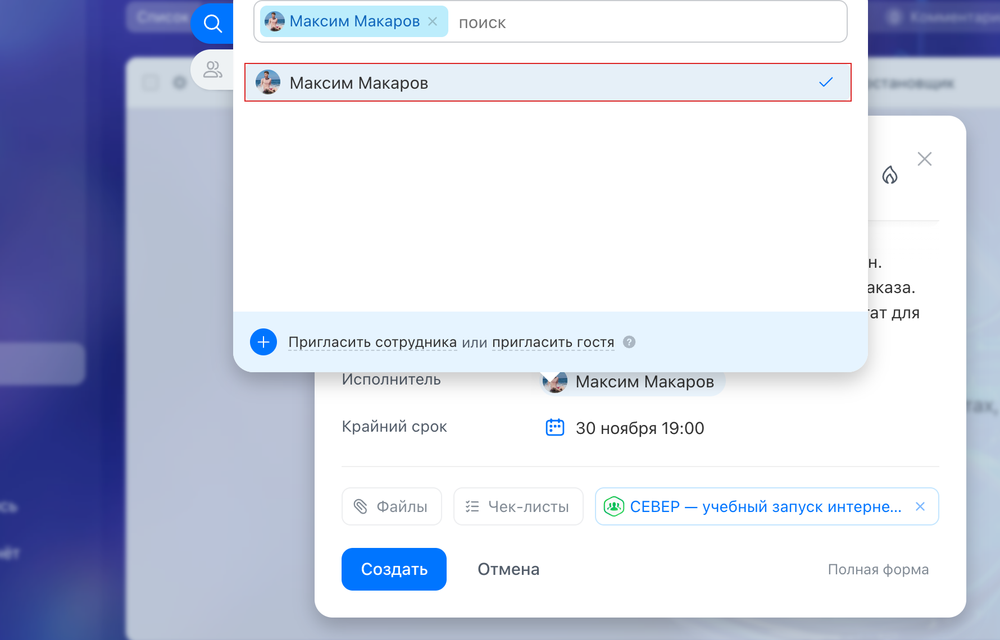
Проверьте исполнителя Обезличенная строка соответствует текущему участнику. Реальные приглашения не нужны. Нажмите изображение, чтобы открыть исходный размер. - Откройте крайний срок
Нажмите дату в строке «Крайний срок».

Откройте крайний срок Срок, предложенный сервисом, нужно проверить перед сохранением. Нажмите изображение, чтобы открыть исходный размер. - Задайте срок
Выберите «Завтра» для повторения примера. Если для работы согласован другой срок, используйте его.
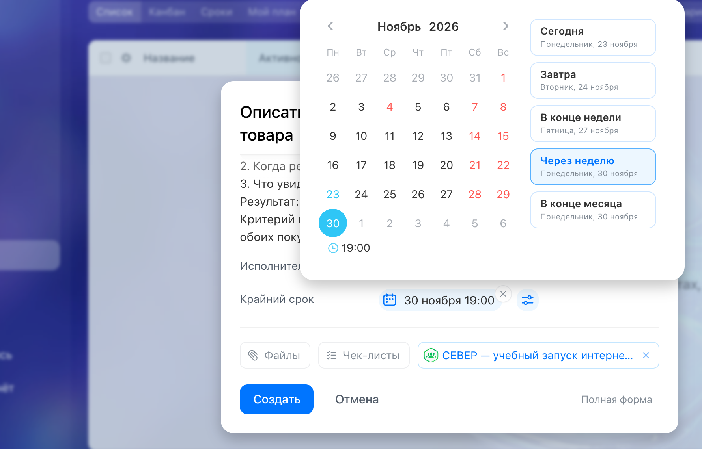
Задайте срок Для своей работы выберите согласованный срок. Нажмите изображение, чтобы открыть исходный размер. - Проверьте связь с проектом
В нижней части формы найдите «СЕВЕР — запуск интернет-магазина».

Проверьте связь с проектом Связь с проектом уже подставлена, поскольку форма открыта из его задач. Нажмите изображение, чтобы открыть исходный размер. - Сохраните задачу
Проверьте название, описание, исполнителя, срок и проект. Нажмите «Создать».

Сохраните задачу Кнопка сохраняет заполненную карточку. Нажмите изображение, чтобы открыть исходный размер. - Найдите задачу в списке
После создания обновите страницу клавишей F5. Нажмите название задачи в списке проекта.

Найдите задачу в списке На кадре задача уже сохранена. Открытие названия возвращает к её условиям. Нажмите изображение, чтобы открыть исходный размер.
Карточка связывает условия, ответственность и срок. Теперь исполнитель подготовит правила и оставит текст в обсуждении этой же задачи.
04Выполнение и результат
Сначала нужно определить правила поведения магазина. В нашем примере резерв действует 15 минут: это принятое условие, которое команда согласует с бизнесом. Проверка остатка и создание резерва выполняются одной неделимой операцией: между ними другой заказ не должен занять тот же товар.
Этот текст описывает требования. Проверка работающего сайта потребует отдельных тестов. На текущем занятии результатом задачи является согласованное описание поведения.
- Начните выполнение
Прочитайте условие в открытой карточке. Нажмите «Начать».

Начните выполнение Кнопка находится внизу карточки. Нажмите изображение, чтобы открыть исходный размер. - Проверьте статус
В строке «Статус» найдите «Выполняется».
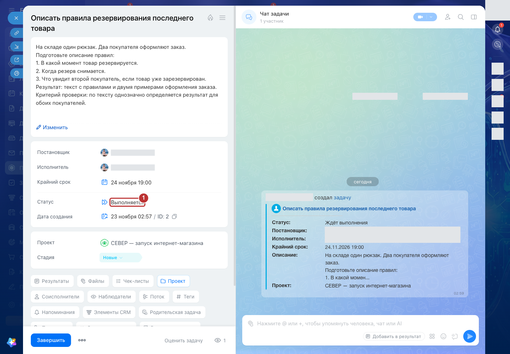
Проверьте статус Статус выполнения изменился. Стадия проекта «Новые» может оставаться прежней: это отдельное поле. Нажмите изображение, чтобы открыть исходный размер. - Найдите поле сообщения
В правой части карточки расположен чат задачи. Нажмите поле ввода внизу.

Найдите поле сообщения Сообщение будет связано с текущей задачей. Нажмите изображение, чтобы открыть исходный размер. - Введите подготовленные правила
Вставьте текст результата и оба примера. До отправки проверьте условия снятия резерва.
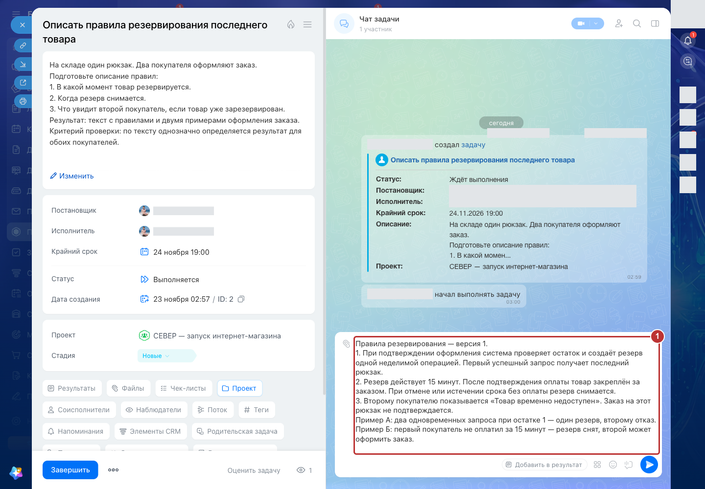
Введите подготовленные правила В поле показан подготовленный текст. Длинное сообщение прокручивается внутри поля. Нажмите изображение, чтобы открыть исходный размер. - Отправьте сообщение
Нажмите синюю кнопку отправки справа от поля ввода.

Отправьте сообщение Рамка выделяет кнопку отправки сообщения. Нажмите изображение, чтобы открыть исходный размер. - Проверьте сохранённый текст
Найдите сообщение в чате задачи. Убедитесь, что отправлены правила и два примера.

Проверьте сохранённый текст Результат работы сохранён как сообщение. Отдельный раздел сервиса «Результаты» в основном маршруте не используется. Нажмите изображение, чтобы открыть исходный размер.
В чате сохранены правила и два примера. Перед завершением сопоставим сообщение с исходными условиями задачи.
05Завершение и поиск задачи
Для самопроверки прочитайте правила с позиции второго покупателя. Из текста должно следовать, почему заказ не подтверждается и когда покупка станет доступна снова. Таблица ниже показывает ожидаемые результаты двух примеров.
| Исходное условие | Ожидаемый результат |
|---|---|
| Один рюкзак, два одновременных оформления | Один успешный резерв. Второму покупателю — сообщение о недоступности. |
| Оплаты нет, 15 минут истекли | Резерв снят. Товар доступен для нового заказа. |
Оба случая описаны однозначно. Можно отметить работу завершённой и проверить, где она теперь отображается.
- Завершите задачу
После самопроверки нажмите «Завершить» внизу карточки.
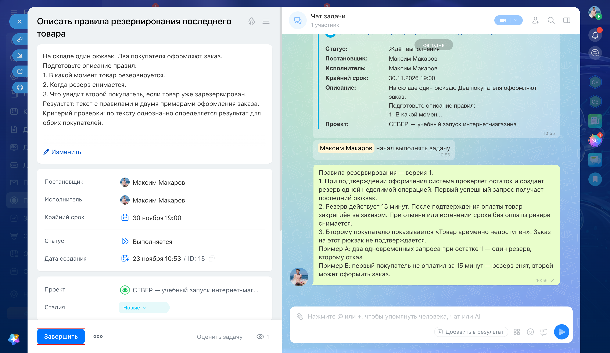
Завершите задачу В этом примере постановщик и исполнитель — один участник. Нажмите изображение, чтобы открыть исходный размер. - Проверьте завершение
Убедитесь, что в строке «Статус» написано «Завершена».

Проверьте завершение Статус показывает, что исполнитель завершил работу. Проверка результата другим участником — отдельный шаг. Нажмите изображение, чтобы открыть исходный размер. - Снимите фильтр незавершённой работы
Вернитесь к списку проекта: закройте карточку крестиком на её левом краю. У фильтра «В работе» нажмите маленький крестик.
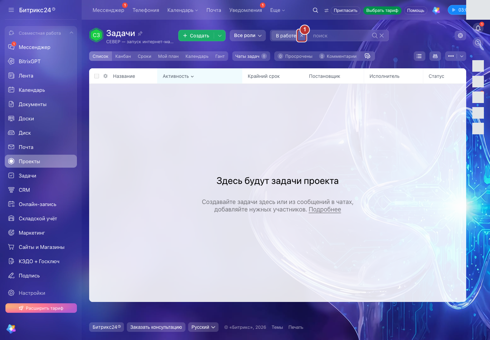
Снимите фильтр незавершённой работы Фильтр может скрывать завершённую задачу. Красная рамка выделяет его удаление. Нажмите изображение, чтобы открыть исходный размер. - Найдите завершённую задачу
В списке без фильтра «В работе» найдите задачу по названию и проверьте её статус.
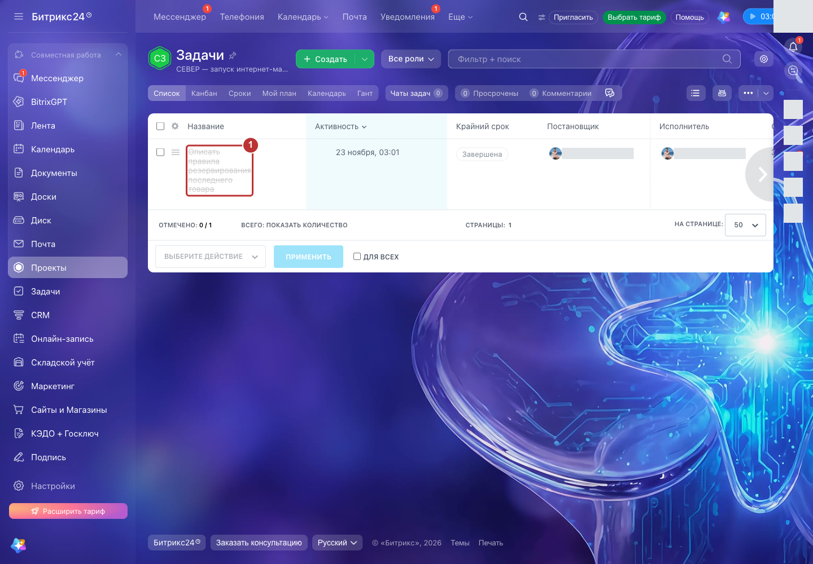
Найдите завершённую задачу После снятия фильтра в списке отображаются и завершённые задачи. Сама задача сохраняется в проекте. Нажмите изображение, чтобы открыть исходный размер.
При командной работе другой участник читает результат и оставляет замечания или подтверждение. При индивидуальной работе покажите преподавателю карточку и текст правил. Завершение задачи само по себе не подтверждает качество требований или правильность будущего кода.
06Расширенные возможности Битрикс24
Кроме карточки и списка в портале доступны другие инструменты. На кадрах включён деморежим — временный доступ к расширенным функциям. Их доступность зависит от тарифа. Для выполнения задания достаточно основного маршрута.
Диаграмма Ганта: работа во времени
Для нескольких задач бывает нужно сравнить сроки и последовательность выполнения. Диаграмма Ганта размещает задачи вдоль временной шкалы. Откроем соответствующее представление над списком.

На следующем кадре открыта временная шкала, но строк задач нет. Вверху по-прежнему установлен фильтр «В работе». Этот снимок показывает устройство представления; размещение завершённой задачи на шкале здесь не подтверждено.
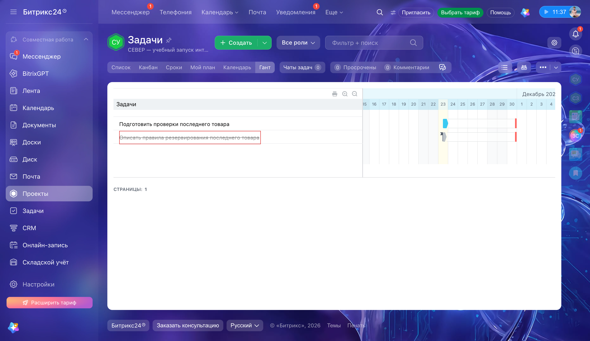
Чтобы найти завершённую задачу, используйте проверенный маршрут предыдущего раздела: снимите фильтр и откройте список. Планирование работ на шкале и настройка зависимостей в этой практике не проверены.
BitrixGPT: помощь в пространстве проекта
В созданном проекте также показан чат с BitrixGPT — встроенным AI-помощником. Найдите его на кадре пространства проекта ниже. По тексту интерфейса он предлагает получать статус и выявлять риски проекта.
Наличие пункта меню не подтверждает доступность функции на любом тарифе. Ответ помощника требует проверки по самим задачам и договорённостям. В этой практике сохраните описание и результат задачи; обращения к помощнику не требуются.
Какие возможности можно изучить дополнительно
- Зависимости и планирование нескольких задач на диаграмме Ганта.
- Автоматизация: действия при переходе задачи между стадиями.
- Обобщение состояния проекта с помощью BitrixGPT.
Эти действия в практику не входят. Перед их использованием проверьте доступность на своём тарифе.
Основной результат занятия уже получен без настройки автоматизации. Теперь применим тот же порядок постановки к другой части первого выпуска магазина.
07Самостоятельная работа
В том же проекте создайте ещё две задачи. Повторите маршрут раздела «Постановка задачи»: название, условие, результат, критерий проверки, исполнитель и срок. Правила резервирования останутся исходными данными для одной из новых задач.
Описать состав карточки рюкзака
Результат: список данных о товаре с примером заполнения. Укажите название, цену, изображение, вариант цвета и доступный остаток.
Критерий: по описанию можно составить карточку одного товара без уточнения обязательных полей.
Подготовить проверки последнего товара
Результат: три проверки по правилам резервирования. Для каждой укажите исходные данные, действие и ожидаемый результат.
Критерий: проверены одновременная покупка, истечение резерва и подтверждение оплаты в пределах срока.
Оставьте новые задачи незавершёнными, пока их результаты не подготовлены. При выборе сроков учитывайте, что проверки опираются на согласованные правила резервирования.
- Проект с сохранённой целью и границами первого выпуска.
- Три задачи с исполнителем, сроком и критериями проверки.
- Одну завершённую задачу с текстом результата и двумя примерами.
- Комментарий другого участника с подтверждением или замечаниями. При индивидуальной работе — отметку о самопроверке.
Сдача второй темы через GitHub
Создайте свой репозиторий из стартового шаблона дисциплины: Use this template → Create a new repository. Назовите его project-management. В нём будете собирать результаты практических работ; код магазина для этой темы не нужен.
- Тексты для копирования: проект, условия трёх задач, результат первой задачи и отметка о самопроверке. Своими будут исполнитель, согласованные сроки и ссылки. Не отправляйте подтверждение проверки до того, как действительно её выполнили.
- Заготовка отчёта: замените пять заглушек своими ссылками. Тексты будущих результатов двух самостоятельных задач не заполнены: для этой сдачи достаточно поставить эти задачи.
- Подробные требования к семи скриншотам и порядок загрузки. Фотографировать каждый клик не нужно.
Файл в lesson_02/screenshots/ | Что должно быть видно |
|---|---|
01-project.png | Сохранённые название, цель и границы проекта «СЕВЕР». |
02-task-reservation.png | Условия первой задачи, результат и критерий, исполнитель, срок и проект. |
03-result.png | Отправленные в чат правила резерва и оба примера; название задачи. |
04-review.png | Отправленная самопроверка двух примеров либо настоящий отзыв участника; название задачи. |
05-completed.png | Название первой задачи и статус «Завершена». Найдите её после снятия фильтра «В работе» и откройте карточку. |
06-task-product-card.png | Задача о карточке товара: полное условие, результат, критерий, исполнитель, срок, проект и статус. |
07-task-checks.png | Задача о трёх проверках: полное условие, результат, критерий, исполнитель, срок, проект и статус. |
Снимайте свою работу в исходном разрешении и сохраняйте PNG. Скройте почту, телефон, аватары и постороннюю переписку, но оставьте читаемыми условия, сроки, результаты и статусы. При необходимости добавьте кадры-продолжения и ссылки на них в отчёт. Не подменяйте свои снимки кадрами урока. Видимость репозитория и доступ преподавателя согласуйте заранее; в публичном репозитории файлы видны всем.
- Загрузите семь PNG с точными именами в
lesson_02/screenshots/своего репозитория. - Заполните
lesson_02/report.md, сохраните изменения и откройте Actions → Проверка сдачи. - Дождитесь зелёного запуска для последнего коммита. Если проверка красная, откройте её журнал и исправьте перечисленные ошибки. Пустой шаблон проверку не проходит.
- Передайте преподавателю ссылку на свой репозиторий и на успешный запуск Actions.
Actions проверяет комплект, а преподаватель — содержание. Наличие файлов и ссылок не доказывает правильность правил резерва или выполнение действий в Битрикс24. Портал остаётся закрытым: скриншоты нужны в том числе для проверки без входа в вашу учётную запись. Гант, BitrixGPT и платные возможности для сдачи не требуются.
Проект теперь содержит исходные договорённости, выполненную работу и очередь следующих задач. Эти записи станут основой дальнейшего планирования выпуска.
08Короткий словарь
- Проект
- Ограниченная работа по получению согласованного результата. В Битрикс24 — также пространство связанных задач.СЕВЕР → правила резерва · карточка товара · проверки
- Задача
- Зафиксированная работа с исполнителем и ожидаемым результатом.Описать правила → текст + два примера
- Постановщик / исполнитель
- Кто поручил работу / кто отвечает за выполнение. Здесь обе роли совмещены.Условие → выполнение → сообщение с результатом
- Крайний срок
- Согласованная дата и время завершения.Дата и время → завершение работы
- Критерий проверки
- Условие, по которому можно проверить результат.Остаток 1 + два запроса → один резерв
- Статус / стадия
- Статус показывает выполнение задачи; стадия — её положение в настроенном процессе проекта.Статус «Завершена» ≠ автоматическая смена стадии
- Резерв товара
- Временное закрепление товара за оформляемым заказом.1 доступен → 1 в резерве → оплата или снятие
- Фильтр
- Условие отбора записей в списке.«В работе» → завершённая задача скрыта
- Диаграмма Ганта
- Представление задач на временной шкале. Реальный кадр приведён в обзоре.Задача → начало ── работа ── завершение
- Деморежим / AI
- Временный доступ к расширенным возможностям / искусственный интеллект. AI-помощник BitrixGPT показан в пространстве проекта.Записи проекта → ответ помощника → проверка человеком
Источники и особенности интерфейса
- Сайт Битрикс24 и регистрация.
- Официальные тарифы Битрикс24. В бесплатный план включён раздел «Задачи и Проекты». Состав отдельных функций нужно сверять с текущим тарифом.
- Результат задачи сохраняется сообщением в чате. Отдельный раздел «Результаты», автоматизация и зависимости задач в этой практике не используются.
- Правило о резерве на 15 минут принято для разбираемого примера. Проверка работающего магазина в задание не входит.